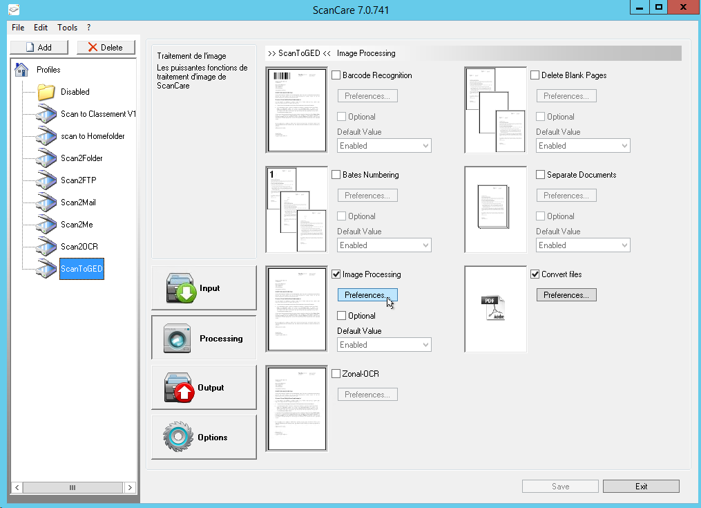
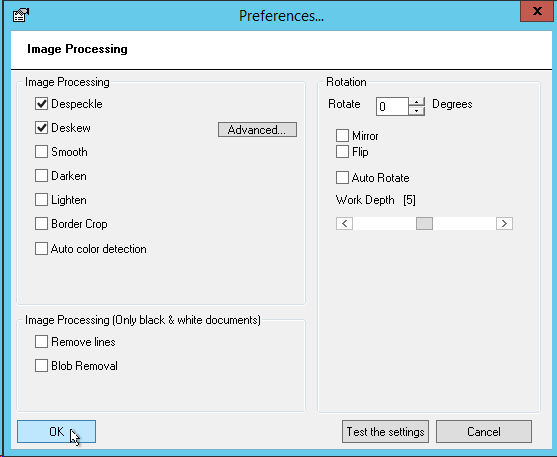
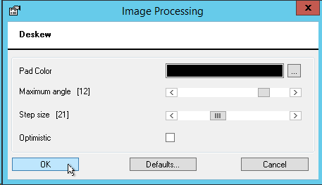
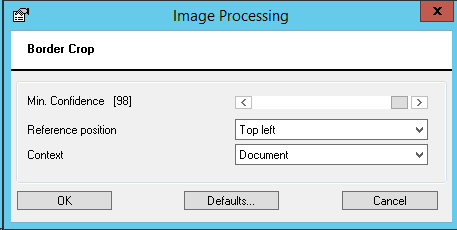

Watchdoc ScanCare - Configure Treatments
Configure the Image Processing
Principle
By means of the Watchdoc ScanCare function Image Processing, you can improve the scan quality of your documents. You can automatically straighten scanned pages or remove black spots that result from dirty scanning beds.
Procedure
To configure the Image Processing:
-
Start the Watchdoc ScanCare configuration program;
-
Select an existing scan profile or create a new scan profile;
-
Go to the Processing section.
-
Tick the check box Enable the function, then click on the Preferences button;

-
in the Image Processing dialog box that is displayed, configure the image processing functions:

-
Despeckle: Removes black spots. This cleans an image of extraneous pixels that generally arise during the faxing or scanning process. In the Advanced settings, you can define the minimum size of a spot to be detected as spot
-
Deskew: straightens documents scanned askew. Thus, the barcode or OCR recognition is improved. In the Advanced settings, you can precise this function:
-
Pad color : Color used to fill the space having emerged from the deskew;
-
Maximum angle : maximum angle of research. IE: set 10 to perform a skew research about ±10 degrees. A value lower than 15 is suggestedDetermines the smallest angle of skew to detect. 0.25 is suggested. Higher value results in faster detection and vice-versa.
-
Step size : determines the smallest angle of skew to detect. 0.25 is suggested. Higher value results in faster detection and vice-versa.

-
Smoth: smooth black-and-white documents.
-
Darken: Examines pixels in the current image and expands the black ones.
-
Lighten: Examines pixels in the current image and removes the black ones.
-
Border Crop: Examines the current document to fine dark exterior lines along the outside edge, modifying it to remove them. In the Advanced settings, you can precise this function:
-
Min. Confidence: Confidence threshold in percentage. Default value is 98 for documents and 92 for digital photo;
-
Reference position: Reference position for the removal of borders;
-
Context Specifies: the object for which borders have to be removed.

-
Auto color detection: Analyzes the color of the scanned document and converts it to the minimum color depth possible. Thus, the quality of the image is preserved while the file size is considerably reduced.
-
Remove lines (black and white documents only): removes unwanted lines and scratches from the document. Caution: do not use this function if you want to use barcode recognition at the same time. Otherwise, ScanCare ignores this setting automatically, barcodes cannot be read. In the Advanced settings, you can precise this function:
-
Horizontal lines: removes horizontal lines;
-
Vertical lines: removes vertical lines
-
Maximum Gap: maximum gap size in the line for the line to still be considered a line. If set to 0, no gaps are allowed in the line. If set to -1, gaps calculation are not considered in the line equation. Default valus is -1.
-
Maximum Thickness: Maximum thickness of a line allowed at any area of the line. If the line is thicker than this value, the line will not be removed. Range from 1 to 50. Default value is 8.
-
Minimum Length: Minimum length allowed for the line to be removed. Only lines equal to or longer than this value will be removed. Range from 1 to Image Width if Horizontal, and from 1 to Image Height if Vertical Line. Default valus is 75.
-
Maximum Character: Interception If characters intercepting the line have a size of interception larger than this value, the line will not be removed. Default value is 8.
-
Reconnect broken characters: If enabled characters broken during the removal of a line are reconnected. Default value is disabled.
-
Blob removal (black and white documents only): Locates and removes large black objects in images such as binder punch holes. In the advanced settings, you can specify the positions of the objects to be removed.
-
Rotate: rotates the content of the scanned page according to the value you entered.
-
Value: indiquez le degré de pivotement à appliquer au document ;
-
Mirrow: Mirrows the content of the scanned page;
-
Flip: Flips the content of the scanned page;
-
Auto Rotate : If you have licensed the OCR module and you use a scan device profile, you can enable this feature. Upside down pages are no longer a hassle and the quality of your scanned documents remains high.
-
Level of accuracy:The level of accuracy indicates how deep the engine is allowed to work in order to find a satisfactory result. If the the level of accuracy is increased, more time is spent on low-quality documents to achieve a good result. In the case of documents of good quality, this function has no effect. The possible values range between 0 and 255. 0 = highest speed, 255 = best accuracy.
-
Click on the Test features button and select a document on the droplist to apply image processing and validate it.